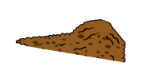
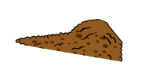

Once prácticas para una


A través de esta infografía, queremos compartir nuestra propuesta tecnológica con base en once prácticas para una caficultura con enfoque climático y sostenible.
Con ellas, los agricultores y agricultoras con los que hemos trabajado han logrado obtener beneficios como la disminución del daño ocasionado por las plagas y enfermedades, el ahorro por efecto de la disminución de la compra de insumos externos y una mayor producción de café de calidad.
Hemos organizado estas prácticas en tres categorías según sus beneficios


Este aprendizaje se basa en la experiencia de Practical Action en 180 parcelas de pequeños productores no organizados en un entorno de ecosistemas frágiles de la selva alta de la región San Martín. Luego de la aplicación de estas prácticas, las y los productores vieron un aumento en sus ingresos mayor al 25% y percibieron un impacto positivo en su relación con el ecosistema local.
¿Qué podemos hacer si nos enfrentamos a una parcela cada vez menos productiva? ¿Cómo podemos encontrar un balance que beneficie también al medio ambiente?


Consiste en la reinstalación de plantaciones de café en áreas que anteriormente fueron cafetales, pero que dejaron de serlo debido a diversos factores, entre ellos, la baja productividad, el ataque de plagas y enfermedades, u otros.
- Incremento de productividad.
- Mejor diseño de la plantación e instalación de sombra
- temporal y definitiva
- Reducción de costos.
- Facilita las labores culturales y la incorporación de prácticas de conservación de suelos.
- Permite introducir variedades de alta calidad en taza y
- resistentes a plagas y enfermedades.


Las coberturas vivas superficiales son plantas que se asocian con cultivos con la finalidad de proteger los suelos de la erosión y recuperar su fertilidad. Funcionan como fuente proveedora de nutrientes y materia orgánica.
- Permite la recuperación productiva de los suelos degradados.
- Fijación de nitrógeno en el suelo.
- Incrementa la fertilidad del suelo y el contenido de materia orgánica.
- Mantiene la humedad del suelo en épocas de sequía.
- Mejora la textura del suelo.
- Reduce las pérdidas del suelo por causa de la erosión.
- Ayuda a controlar las malezas.


Consiste en la instalación de árboles para dar sombra al café. Para ello es necesario considerar las siguientes actividades:
- Identificación las especies forestales que mejor se asocien y su densidad ideal.
- Producción de los plantones forestales en viveros centralizados.
- Diseño, instalación y manejo de los árboles de sombra del café.
- Mejora de la calidad del café y a la reducción de plagas y enfermedades.
- Reducen el impacto de las sequías, heladas y control de erosión de los suelos.
- Propician la recuperación productiva de los suelos.
- Reducen la concentración de GEI en la atmósfera.
- Generan ingresos adicionales al cultivo de café por la venta de la madera.

 



Esta tecnología consiste en la descomposición de residuos orgánicos producidos en la finca a través de la introducción de EM que aceleran el proceso de descomposición. Como resultado se obtiene abono orgánico (compost y biol) en un periodo de 25 a 45 días.
- Aprovecha residuos orgánicos de las fincas.
- Reduce los niveles de contaminación de las aguas y del ecosistema.
- Reduce las emisiones de GEI.
- Es una alternativa de negocio para los pequeños productores en sus comunidades.
- Permite ahorrar en la compra de insumos externos.


Consiste en aplicar al suelo fertilizantes orgánicos producidos por los propios productores en sus fincas, complementando con fertilizantes orgánicos externos de ser necesario. Esto se hace con la finalidad de suministrar al cultivo de café los nutrientes necesarios de forma sostenible. La primera aplicación se realiza al inicio de la floración. La segunda en el llenado del grano y la ultima un mes antes de la etapa de maduración del fruto.
- Reduce los costos de abonamiento en 30% - 40%.
- Incremento de productividad y calidad
- Reducción de plagas y enfermedades
- Incrementa los niveles de materia orgánica y la fijación de carbono en el suelo.
- Posibilita la recuperación productiva de suelos degradados.
- Mejora la textura del suelo e incrementa la capacidad de absorción y retención del agua.


Son terraplenes formados de manera progresiva en los surcos de café por efecto del arrastre y acumulación de suelo. Estas terrazas se pueden construir sin la necesidad de remover el terreno, utilizando vástagos de plátano, tallos y ramas provenientes de la poda de café y árboles de sombra.
- Reduce los costos de abonamiento de 30% a 40%.
- Mantiene la humedad del suelo en épocas de sequías.
- Incrementa la infiltración del agua en el suelo.
- Reduce la erosión hídrica del suelo.
- Previene y controla la formación de cárcavas.
- Facilita la incorporación de nutrientes en el suelo.


El control orgánico se refiere al uso de insumos químicos provenientes de fuentes naturales y de algunas plantas que tienen propiedades insecticidas, fungicidas y nematicidas. Por otro lado, el control biológico es un método que emplea depredadores (organismos vivos) para controlar plagas y enfermedades.
- Son productos naturales y forman parte del ecosistema.
- Poseen baja toxicidad.
- Baja o nula patogenicidad sobre la fauna benéfica.
- No generan resistencia en las plagas.
- Aplicación fácil y segura.
- Reduce los costos en relación al uso de productos sintéticos.
- Si se realiza un control preventivo, los gastos pueden reducirse en 50%.


Consiste en recolectar solo los frutos o cerezos de café completamente maduros. Para ello, se descartan los frutos secos, sobremaduros, pintones y verdes. Es necesario realizar una evaluación del punto óptimo de maduración del fruto de café, el cual debe ser mayor o igual que el 80% de granos completamente maduros.
- Incrementa la calidad física y en taza del café.
- Permite ofertar el café según las preferencias y exigencias de los consumidores.
- Mejora la articulación comercial de los pequeños productores.
- Facilita y reduce costos durante el proceso de postcosecha del café.


Consiste en la aplicación de la poda a un grupo de plantas. Puede hacerse por surcos, lotes o de forma secuencial, y en ciclos de renovación de 3, 4, 5 o 6 años. De esta manera, se incorpora materia orgánica al suelo, incrementando sus niveles de fertilidad. La duración del ciclo de renovación depende de la edad, densidad de siembra y la localidad. Puede realizarse a partir de los 7 años de edad de la plantación de café.
- Reduce los costos.
- Reduce las plagas y enfermedades.
- Mayor eficiencia en el aprovechamiento de los nutrientes.


Consiste en implementar la infraestructura básica en cada finca para procesar el café cerezo y transformarlo en café pergamino seco, listo para la comercialización. Dicha tecnología involucra 3 etapas: el manejo agronómico, cosecha del cerezo y la post cosecha.
- Incrementa la calidad física de 54% a 75%, y la calidad en taza de 78 puntos a 84 puntos.
- Incremento de los ingresos en 20% solo por la calidad física del café.
- Facilita la articulación comercial con empresas y cooperativas exportadoras de cafés especiales.
- Reduce los costos hasta en 30%.
- Reduce el consumo de agua de 25 L/kg a 5 L/kg de café pergamino.


Alternativa para reducir las emisiones de metano, originado principalmente durante el proceso de postcosecha. Se realiza en dos etapas de depuración biológica, utilizando dos pozas o lagunas de tratamiento.
- Reduce las emisiones de GEI producidos durante el proceso de postcosecha del café.
- Reduce la contaminación de las fuentes de agua.
- El agua tratada mediante la tecnología puede volverse a utilizar, principalmente en actividades productivas, disminuyendo de esta forma el consumo de agua.
- Contribuye a mejorar la higiene del hogar.
- Los costos de la implementación son relativamente bajos.


Consiste en una estructura de madera o metal con cubierta preferentemente de calamina traslúcida, piso de madera o cemento, y bandejas en las cuales se deposita el café lavado para el secado. Sus dimensiones dependen del volumen de producción. Por ejemplo: para una producción de 100 quintales, se requiere una área de 10x5m con sus respectivas bandejas o piso.
- Reducción del tiempo de secado del café de 15 a 6 días en promedio.
- Conserva la calidad.
- Reducción de costo de la mano de obra para el secado.


Estás prácticas forman parte de nuestro modelo SAM (Sistema Agroforestal Multiestrato), que articula el trabajo de las y los pequeños caficultores con tecnologías de manejo de vegetación y el suelo. A través de este sistema, cerca de 200,000 familias productoras de café podrían adaptarse al cambio climático y asegurar sus medios de vida. Además, tiene el potencial de contribuir para que el gobierno cumpla sus metas para la disminución de los impactos del cambio climático y reduzca sus emisiones. Finalmente, fortalece la producción de café, la cual genera cerca de 800 millones de dólares en exportaciones anualmente.
El futuro de las y los agricultores, de los cultivos y de los ecosistemas de los que dependen, está sujeto a las acciones de adaptación que tomemos. Las comunidades que trabajan con Practical Action están construyendo un futuro fértil mediante la adaptación basada en los ecosistemas, teniendo a la agricultura regenerativa como base y a la diversificación como estrategia, a través de la aplicación del modelo SAM.